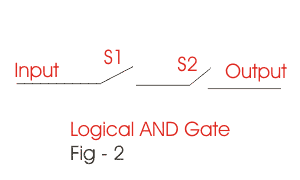

Here the outputs are quite different from OR operation. Traverse the table row by row. Firstly the inputs are A = 0 and B = 0 for which after logical AND operation the output is Y = 0. Again traverse to the next row, here the inputs are A = 0 and B = 1. The respective output is 0. Now the inputs are A = 1 and B = 0 and the output after AND operation is also 0.
| INPUT | OUTPUT | |
|---|---|---|
| A | B | Y = A.B |
| 0 | 0 | 0 |
| 0 | 1 | 0 |
| 1 | 0 | 0 |
| 1 | 1 | 1 |
Lastly when both A&B = 1 the output is 1. Thus we can find the difference of it from Boolean OR operation. Here 1 is received as output only when both the inputs are 1. When either of the input is 0 the output for Boolean AND operation is 0. Again this phenomenon can be under stand by simple switch circuit. To understand this Boolean operation let concentrate on fig. 2.
In the above figure two switches are connected in series i.e one by one. Now see if both the switches are opened no signal will be received in the output. i.e if S1 = 0 and S2 = 0 the output is also 0. Now make either of the input 1. When S1=1 S2 = 0 and when S2 = 1 S1 = 0. In both the cases one switch is closed but other is opened, thus no output signal is received. Output signal is received only when both the switches are closed i.e when s1 & s2 both are 1. Thus you can understand how Logical AND operation or Boolean AND operation works.
Complement Logic
| INPUT | OUTPUT |
|---|---|
| A | A’ |
| 0 | 1 |
| 1 | 0 |
In Complement Logic on logic is enough. Here if the input is 1 the output will be 0 and if the input is 0 the output is 1. Thus you can say that it is totally different from AND operation and OR operation. The Complement Logic can be better understandable to you from the truth table given beside. Here the sign is (').
In logical complimentation as you can see that for the input 1 the respective output is 0 and vice versa. This operation phenomenon is also available in I.Cs which has a wide range of implementation in our real life.
 by
by